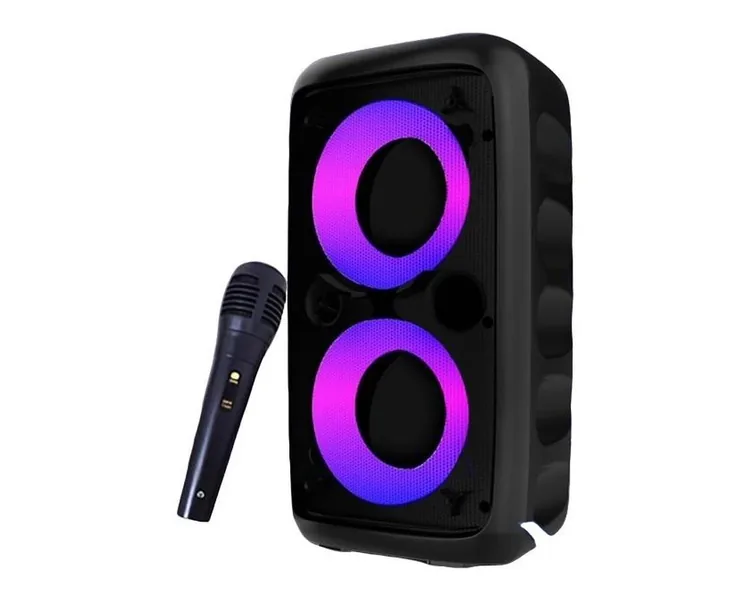
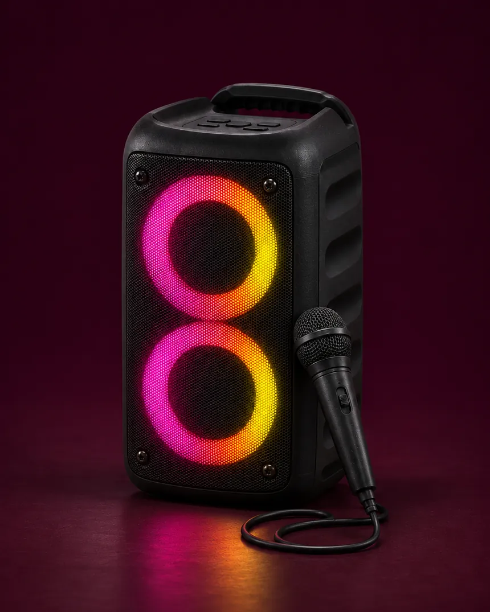
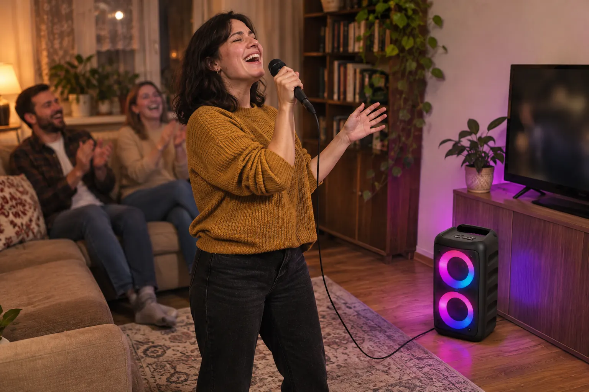
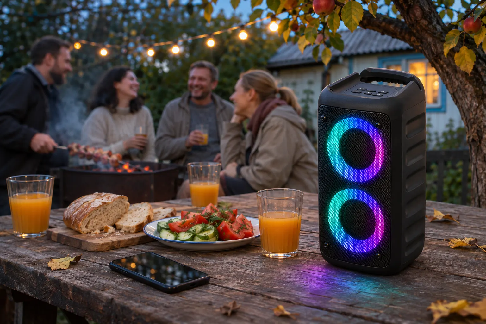
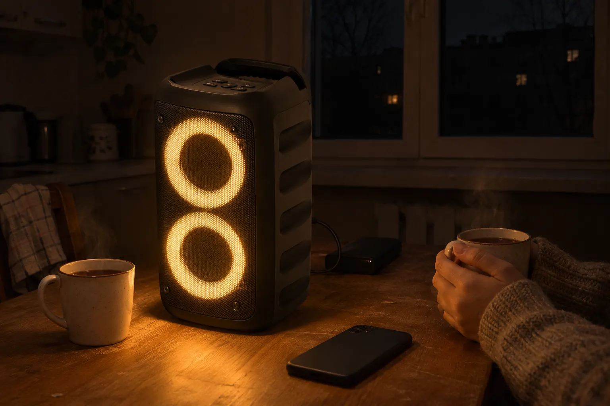
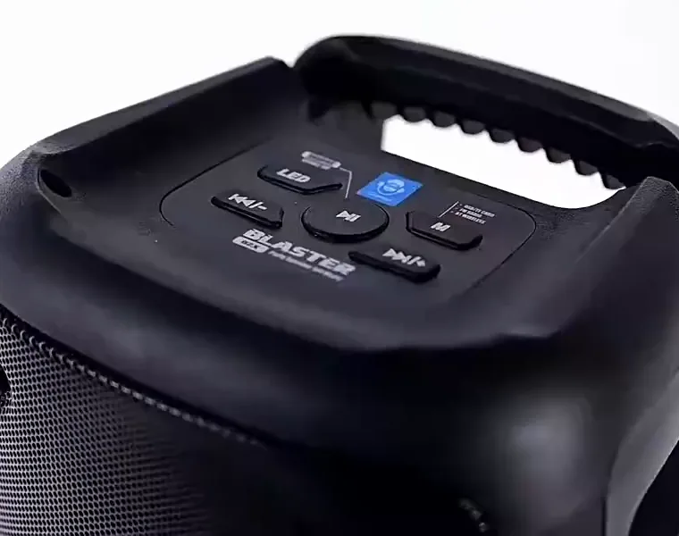
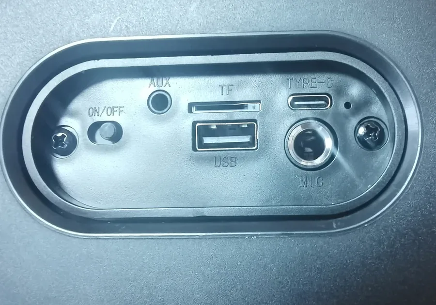
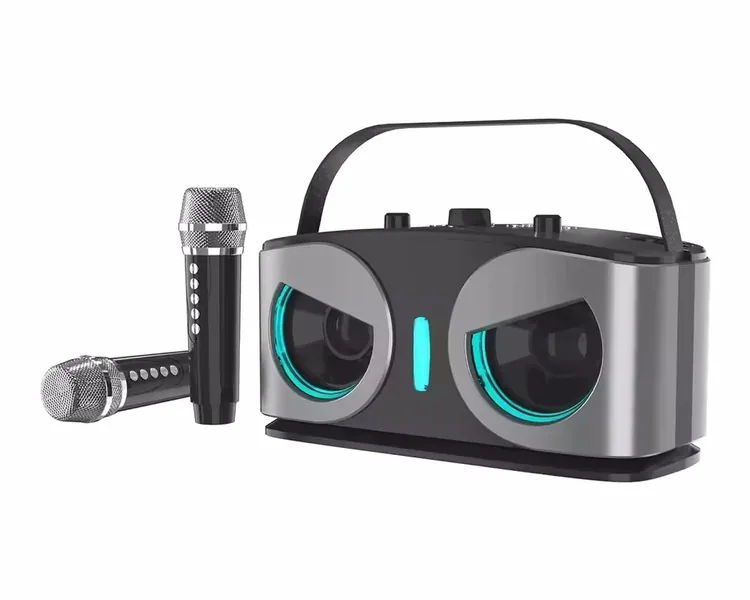

«чорний»: колонка HY-3317
2128,87 грн 4790,35 грн
- Дротовий мікрофон у комплекті
- Кільця підсвітки, FM-радіо, TWS
- 10 Вт, 2400 мА·год, до 8 годин
- Усі 9 відгуків на сторінці саме про неї
Колонка HY-3317 з мікрофоном і FM-радіо
Bluetooth-колонка з двома кільцями підсвітки, FM-радіо і дротовим мікрофоном у комплекті. Вмикаєте музику з телефона, вставляєте мікрофон і співаєте. До 8 годин без розетки.
2128,87грн4790,35 грн
Ціна для нових покупців AliExpress. Доставка в Україну безкоштовна, 7-20 днів.

Навколо кожного динаміка кільце з різнокольорових світлодіодів. Світло переливається, біжить по колу і блимає під ритм пісні.
Кнопка LED зверху перемикає режими: від веселки до одного спокійного кольору, рожевого, бірюзового чи теплого білого.
Відео справжнє: так колонка виглядає на звичайному столі, без студійного світла і рекламного рендеру.
Приставка, телевізор і окремий підсилювач не потрібні. Мікрофон вставляється просто в колонку, а пісні йдуть з телефона.

Або вставте флешку чи microSD-картку з піснями, тоді телефон не потрібен.
Він на задній панелі. Штекер великий, 6,35 мм, переплутати з іншими не вийде.
Голос і музика звучать з однієї колонки. Мінусовки легко знайти на YouTube за словом «караоке» і назвою пісні.

29 сантиметрів заввишки і ручка зверху: колонку несуть однією рукою і ставлять на стіл в альтанці, біля мангала чи на підвіконня.
Якщо телефон потрібен для іншого, музику можна грати з флешки чи картки microSD. А дві такі колонки з'єднуються в стереопару TWS: одна грає лівий канал, друга правий.

Колонка не залежить від розетки і роутера, тож у години відключень вона стає радіоприймачем, а підсвітка трохи освітлює стіл.
Ловить звичайні станції 87,5-108 МГц. Новини й музика без мобільного інтернету.
Акумулятор 2400 мА·год. Вісім годин заявляє продавець, на повній гучності буде менше.
Від павербанка, зарядки телефона чи USB у машині. Повний заряд приблизно за 2 години.
Застосунок не потрібен, усе керування на корпусі. Фото справжньої колонки від продавця.


Колонка всього на пів сантиметра нижча за звичайний аркуш паперу. Стоїть на полиці, підвіконні чи в багажнику поруч із сумками.
Це дві різні колонки під одним оголошенням. Усе, що вище на цій сторінці, про варіант «чорний».

2128,87 грн 4790,35 грн

2759,78 грн 6030,82 грн
Якщо співати збираються вдвох і без проводів, беріть «Style B». Якщо потрібна колонка на кожен день, для дачі і на випадок відключень, беріть «чорний»: він дешевший, має FM-радіо і довше працює від акумулятора.
Дані з інструкції HY-3317 і опису продавця, для варіанта «чорний».
Колонка HY-3317 з мікрофоном
2128,87 грн
замість 4790,35 грн
Так, двома способами. Якщо телевізор вміє передавати звук по Bluetooth, підключіть його як телефон. Якщо ні, знадобиться кабель 3,5 мм від виходу на навушники телевізора до роз'єму AUX на колонці.
Так. Це звичайне FM-радіо на 87,5-108 МГц, йому потрібен тільки заряд акумулятора. Режим радіо вмикається кнопкою M.
Від будь-якого USB-зарядного чи павербанка через кабель Type-C. Блока живлення в коробці немає, підійде зарядка від телефона.
Потрібні дві однакові колонки HY-3317. У режимі TWS вони грають разом як стереопара: одна лівий канал, друга правий. Порядок з'єднання описаний в інструкції з коробки.
За даними AliExpress 7-20 днів зі складу в Китаї. Доставка безкоштовна і з відстеженням, в Україні посилку привозить Нова пошта або Meest.
Перевірте її одразу після отримання. Якщо вона не вмикається чи щось брязкає всередині, відкрийте спір на AliExpress з фото чи відео: за програмою захисту покупців гроші повертають.
2128,87 грн це вітальна ціна AliExpress для нових покупців, одна штука на акаунт. Для тих, хто вже купував, ціна буде вищою.
Ціна для нових покупців AliExpress, доставка в Україну безкоштовна.